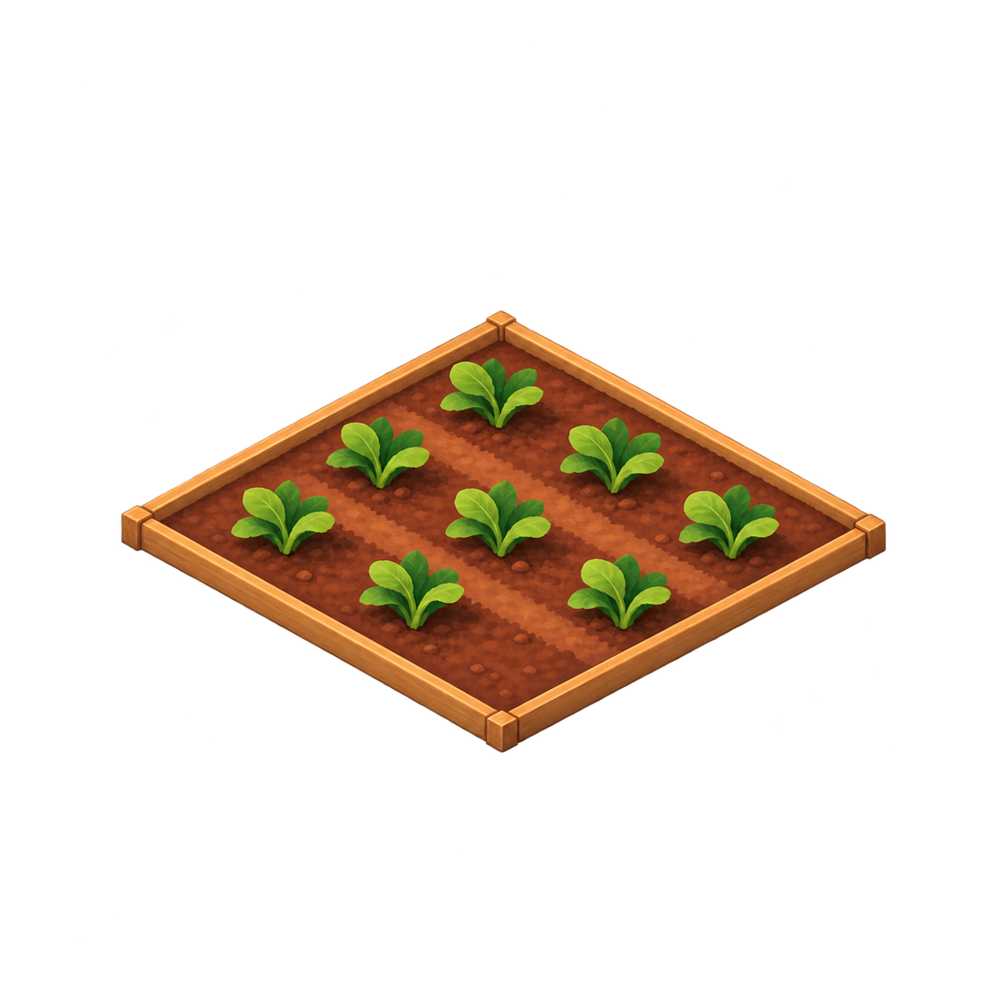
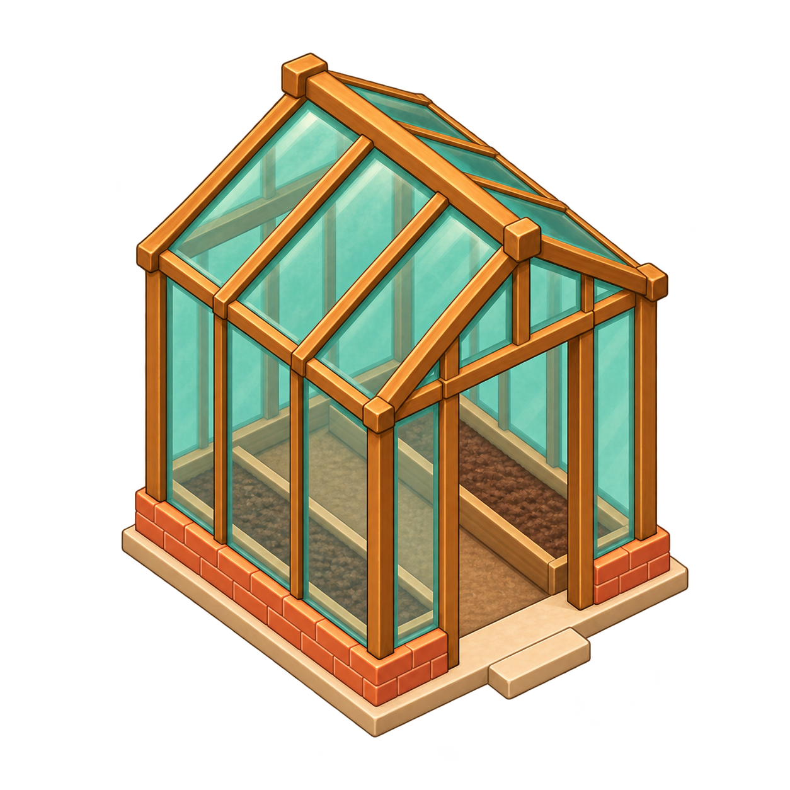
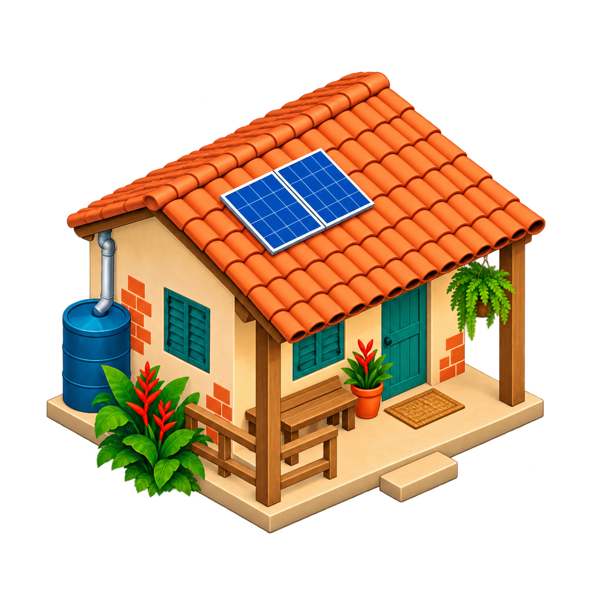

Preparing Vila Aurora…
A little care goes a long way.
Choose a building, then find a clearing.
Five friends. A patch of Brazilian earth.A village we make together.



Story and Sandbox have separate saves on this device.
The village pauses while you listen. Close this page to let daily life unfold.
Start with a place to belong. Then follow the dreams of the people who call it home. Earlier efforts always count.
The village pauses while you read. Follow the chapters in order to unlock each new part of village life.
Choose Story to follow seven chapters and manage resources, or Sandbox to build freely with everything unlocked.
Five residents. A patch of Brazilian earth. A shared beginning.
A full day takes eight minutes at 1×. Pause and change speed at the bottom. Escape cancels building. Your village autosaves locally; open Settings to save immediately or start a new village.
Previews use a separate village and never overwrite your progress.
Your previous save could not be read. Its original data has been preserved. Export the original save before clearing browser data.
Your village saves automatically on this device.
Changes apply immediately and stay on this device.
Your current village will be replaced by an empty lot and five arriving neighbours. A backup stays on this device.